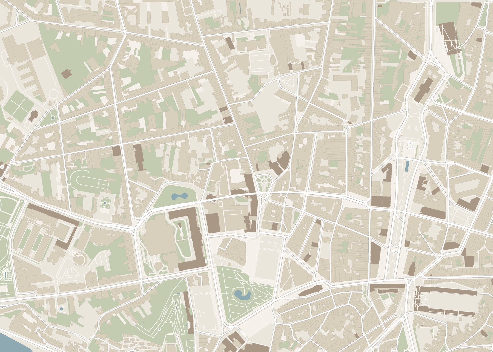
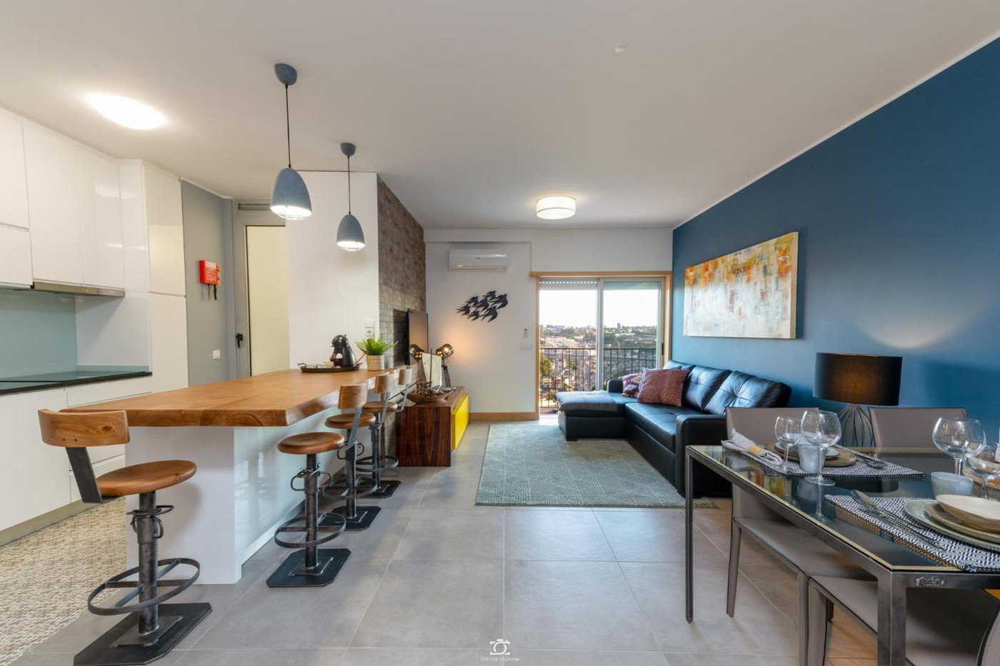
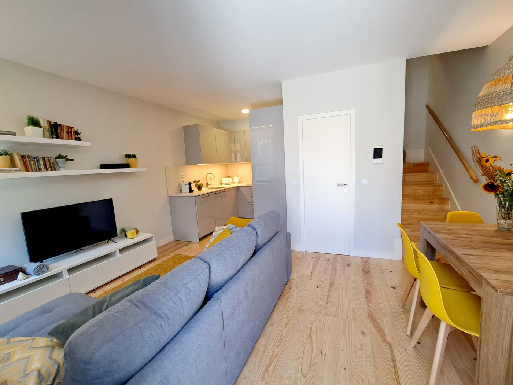

As casas Cedofeita
Cedofeita Charming Flat
Apartamento T1 · até 2 pessoas · 9,5 no Booking (77 avaliações)
O apartamento
- 2pessoas
- 35 m²
- 1quarto
- 1casa de banho
Um apartamento de 35 m² no 3.º andar de um prédio recuperado da Rua de Cedofeita, com escada de madeira, claraboia e elevador.
O quarto tem cama de casal e portas de sacada. A cozinha tem bancada de mármore e máquina de lavar loiça, e nas traseiras há uma varanda com mesa e cadeiras.
O que oferece
- Varanda com mesa
- Elevador
- Ar condicionado
- Wi-Fi gratuito
- Kitchenette equipada
- Máquina de lavar loiça
- Máquina de lavar roupa
- Televisão
- Roupa de cama e toalhas
- Transfer do aeroporto (com custo)
Horários e regras
- Check-in
- 16:00 – 21:00
- Check-out
- Até às 11:00
- Fumar
- Não
- Festas
- Não
- Animais
- Não
- Silêncio
- 22:00 – 08:00
- Estacionamento
- Não tem
Localização
Rua de Cedofeita, 245, 3.º, 4050-179 Porto

Rua de CedofeitaRua da RestauraçãoRua de Dom Manuel IIRua do RosárioRua do AlmadaRua de Miguel BombardaRua da Torrinha Torre dos ClérigosPraça de Carlos AlbertoMHospital de Santo AntónioMuseu Nacional Soares dos ReisLargo da Maternidade de Júlio DinisMAliadosMTrindade Cedofeita Charming Flat 250 m- Hospital de Santo António550 m
- Torre dos Clérigos750 m
- Jardim da Cordoaria750 m
- Metro da Lapa800 m
- Ribeira1,5 km
- Aeroporto12 km
Distâncias calculadas pelo Booking.
Como chegarOutras casas no Porto.

Sé e Fontainhas
Porto Cathedral
Apartamento T2 · até 4 pessoas
9,1 80 avaliações no Booking Ver a casa
Boavista
Boavista Luxury Villas
Moradia T3 · até 6 pessoas
9,1 170 avaliações no Booking Ver a casa
Sé e Fontainhas
Porto Cathedral II
Apartamento T3
9,0 31 avaliações no Booking Ver no BookingCedofeita Charming Flat 29 fotografias